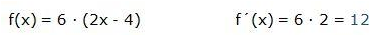
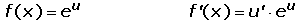
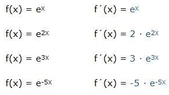

Reglas de derivación
Las reglas de derivación son los métodos que se emplean para el cálculo de la derivada de una función. Dependiendo del tipo de función, se utiliza el más adecuado.
Regla de la constante
La regla de la constante define que la derivada de una constante siempre es cero.

Ejemplo:

Regla de la derivada de una constante por una función
La derivada del producto de una constante por una función es igual al producto de la constante por la derivada de la función.

Ejemplo:
Regla de la derivada de la función identidad
La regla de la derivada de la función identidad define que la derivada de la función identiidad es 1.

Ejemplo:

Regla de la derivada de la función exponencial de base Euler
Si la base de la función exponencial es el número “e” su derivada es igual a la derivada del exponente por el número elevado al exponente.
Ejemplos:
Regla de la potencia
Para hallar la derivada de una función F(x) mediante la regla de la potencia se llevan a cabo los siguientes pasos: 1. Multiplicar el exponente por el coeficiente que acompaña a la x. 2. El ultimo paso es restarle 1 al exponente y este es el resultado final. 3. Si en algun caso despues de realizar la derivada de la función el exponente de X es cero se multiplica el coeficiente que acompaña a la X por 1 ya que todo número elevado a la 0 es 1. Algunos ejemplos a continuación: Halle la derivada de las siguientes funciones.

En este caso se multiplico -4 por el 1 que acompaña a la X y se le resto 1 al exponente de la X.

En este caso se deriva de igual forma pero como el exponente termina siendo negativo se deja a la X en el denominador con su exponente positivo por regla de potenciación, esto con el fin de que la expresión no quede con el exponente negativo.

En este caso se transforma la función a potencia para poder realizar la derivada.

En este caso se transforma la función a potencia para poder realizar la derivada.
Posteriormente cabe recordar que se deben tener en cuenta las reglas de la potenciación para no presentar dificultades al momento de realizar la derivada.